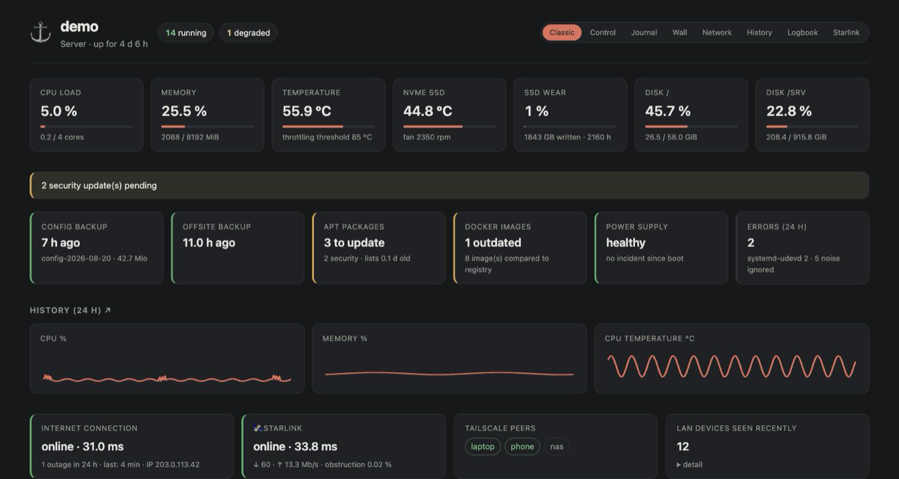
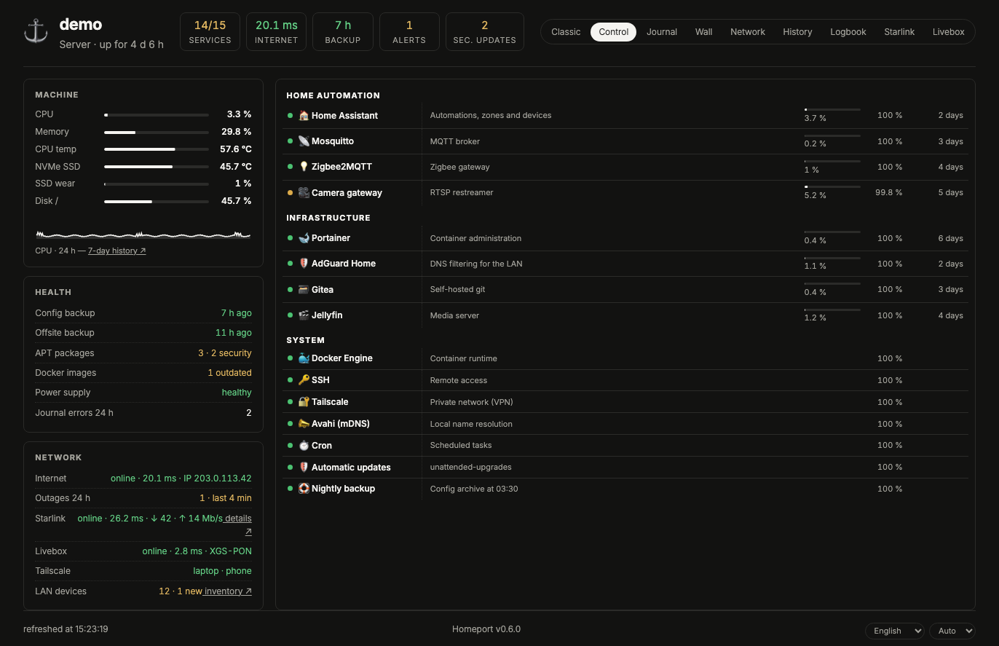
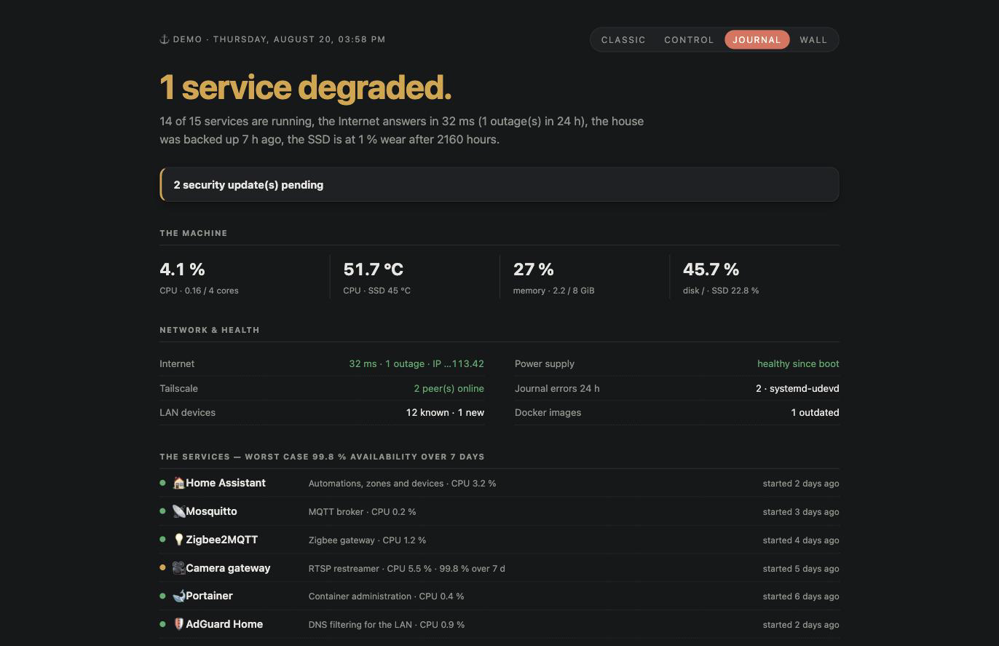
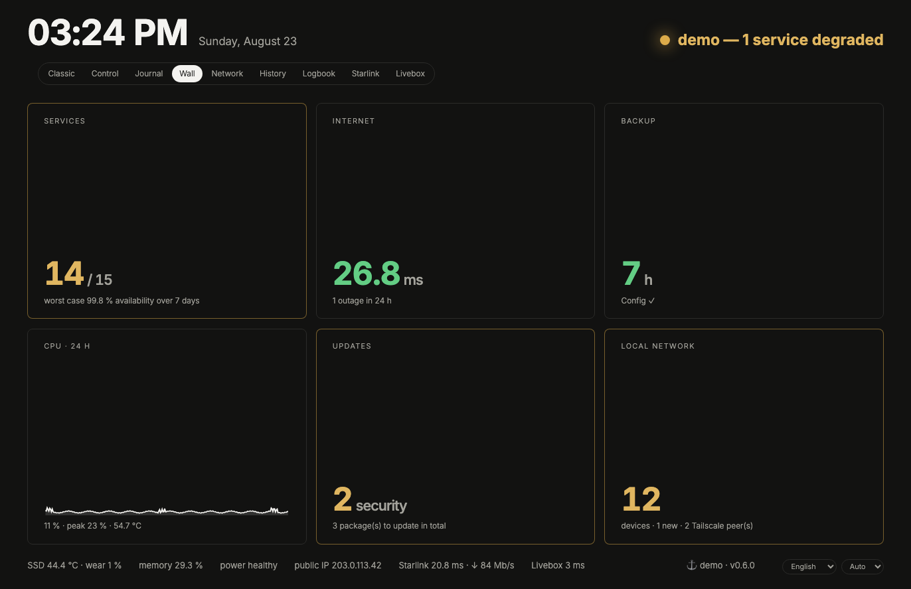

A home server dashboard that reads what your machine already knows — and presents it well.
# Debian / Ubuntu / Raspberry Pi OS
git clone https://github.com/vincentlauriat/homeport
cd homeport && sudo ./deploy/install.sh




Each service combines Docker state, systemd state and a live probe. When they disagree — a container that runs but no longer answers — it shows as degraded, exactly what docker ps hides.
CPU, memory, temperatures, SSD wear, power incidents, journal errors, pending updates, backup freshness — with 7 days of history and Internet outages overlaid.
LAN inventory with real names (yours → mDNS → vendor), new-device detection, Tailscale peers, latency and outage tracking, Wake-on-LAN.
One Python service, one SQLite file, one YAML config re-read on every request. No agents, no external database, no JavaScript framework. English and French.
The LAN is strictly read-only. Actions require a Tailscale-verified identity, and restarts go through exact-command sudo rules — never through the Docker socket, which Homeport only reaches read-only via a proxy. Outbound traffic: two optional calls (public IP, update check), both disablable. No telemetry. Read the security model.